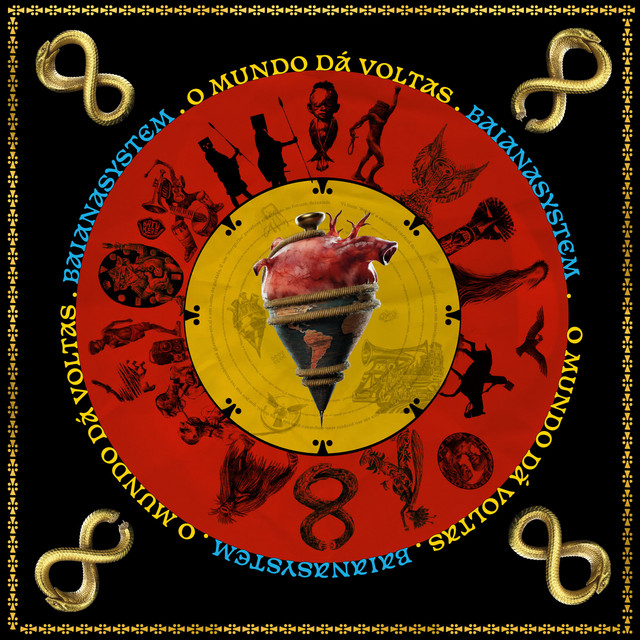
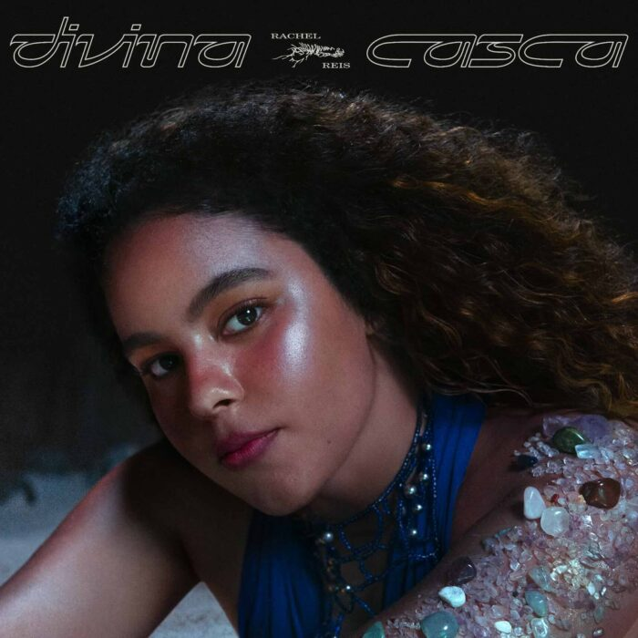
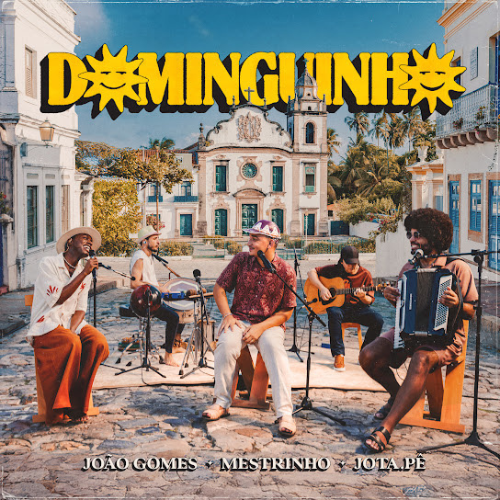
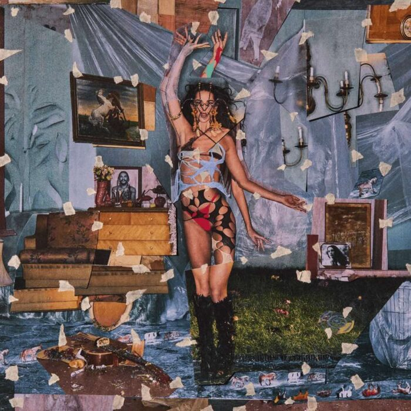
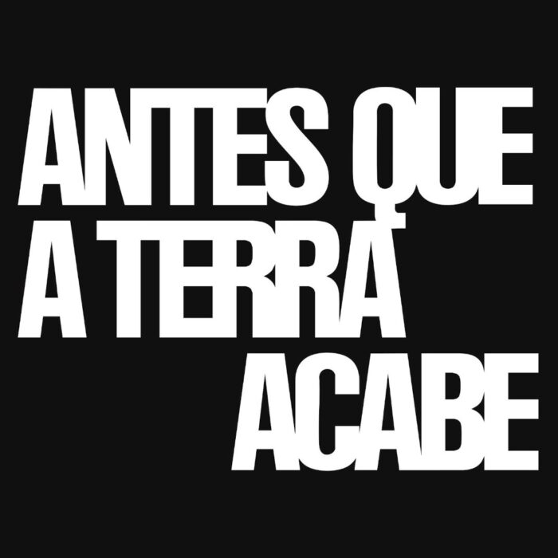
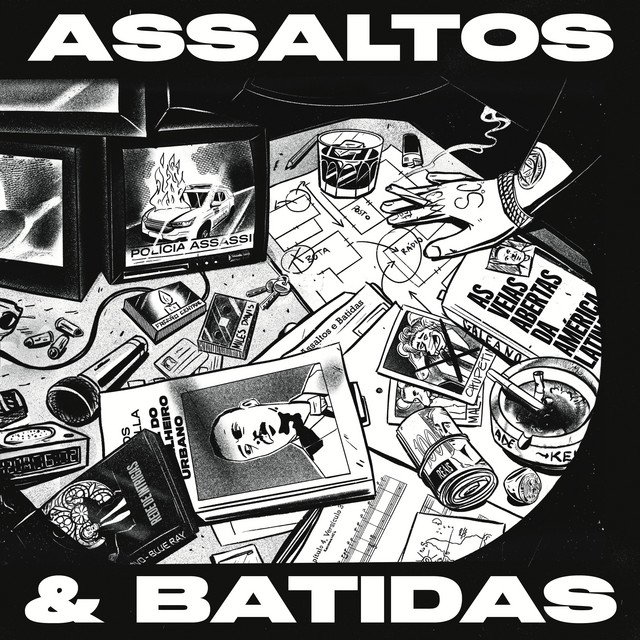
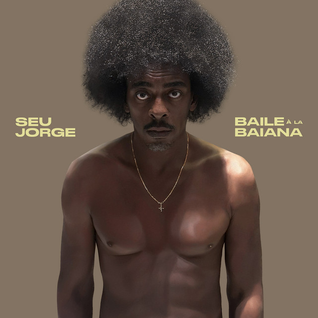

Álbuns Nacionais Lançados
em 2025
2025

O Mundo Dá Voltas
Artista: BaianaSystem
Lançamento: 16/01/2025
Quinto álbum de estúdio da banda retoma elementos marcantes da trajetória do grupo, unindo lirismo contestador, leveza e forte apelo dançante. Com participações de artistas como Emicida, Melly, Anitta, Pitty e Vandal, o disco valoriza o espírito coletivo e transita entre influências afro-latinas, regionalismo e momentos mais acessíveis. Lançado próximo ao Carnaval, o trabalho reafirma a identidade da banda ao mesmo tempo em que aponta para o futuro.

Divina Casca
Artista: Rachel Reis
Lançamento: 15/04/2025
O segundo álbum de estúdio da cantora baiana reafirma seu destaque na nova cena da música brasileira e marca uma fase de amadurecimento artístico e pessoal. O disco mantém a essência da artista ao mesclar MPB, reggae, arrocha e eletropop, além de incorporar mais gingado e versos de rap. O trabalho se divide entre canções de lirismo introspectivo, que exploram dores e reflexões, e faixas de clima leve e ensolarado, que convidam o público a dançar.

Dominguinho
Artista: Jota.pê, João Gomes e Mestrinho
Lançamento: 18/04/2025
Vencedor do Grammy Latino de Melhor Álbum de Música de Raízes em Língua Portuguesa, o disco homenageia Dominguinhos com uma sonoridade acústica e intimista. Gravado em Olinda, o projeto tem clima de encontro entre amigos e celebra a cultura nordestina. Além d canções inéditas, como “Flor”, composta por Mestrinho especialmente para o álbum. O trabalho também apresenta novas versões para sucessos dos artistas envolvidos, como o medley de “Mete Um Block Nele” com “Ela Tem” e uma releitura sensível de “Pontes Indestrutíveis” da banda Charlie Brown Jr.

Coisas Naturais
Artista: Marina Sena
Lançamento: 31/03/2025
Existe uma naturalidade marcante na ralação de Marina Sena com a música, é quase como se ela e a musicalidade fossem uma coisa só. O álbum mistura samba, rock psicodélico e pop, trazendo referências como Gal Costa e Rita Lee, mas sem perder identidade. O trabalho alterna momentos ritualísticos, faixas dançantes e influências latinas. Mesmo quando retoma temas recorrentes, o álbum encontra novos caminhos sonoros, consolidando-se como o trabalho mais completo e criativamente equilibrado da cantora.

Antes Que a Terra Acabe
Artista: Luedji Luna
Lançamento: 13/06/2025
Lançado pouco depois de Um Mar Pra Cada Um, Antes Que A Terra Acabe mostra o outro lado da busca amorosa iniciada no disco anterior. No álbum, a artista mergulha nas contradições, excessos e conflitos do amor, com versos mais diretos e intensos. Mantendo a base sofisticada que mistura MPB, R&B e jazz, o trabalho revela uma artista ainda mais potente e emocionalmente profunda.

Assaltos e Batidas
Artista: FBC
Lançamento: 06/06/2025
Esse disco marca o retorno de FBC ao rap combativo e centrado na força das rimas. O disco resgata a estética boom bap dos anos 1990, mas mantém o discurso atual, com críticas ao capitalismo, defesa da mobilização popular e referências políticas explícitas. Ao longo das faixas, o artista mineiro usa samples, citações de filmes e ecos de Racionais MC’s para reforçar a ideia do rap como ferramenta de transformação social. Sem reinventar o gênero, o álbum se destaca pela contundência da mensagem e pelo equilíbrio entre crítica e apelo popular.

Baila à la Baiana
Artista: Seu jorge
Lançamento: 16/02/2025
O álbum celebra a riqueza cultural brasileira ao unir as raízes cariocas de Seu Jorge à força da música preta baiana. Gravado com a banda Conjuntão Pesadão, o álbum mistura funk, soul e referências da música negra do Rio com ritmos como chula e semba, criando uma sonoridade marcada pelo afropop. O disco fala de encontros, celebração e alegria, reafirmando o artista como um dos nomes mais versáteis da música brasileira.